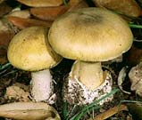
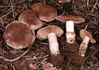

В сообщении представлена информация о пищевых отравлениях грибами, их клинических проявлениях, основных средствах терапии и мерах профилактики.
Быстро растущая во всем мире популярность сбора и употребления в пищу грибов, а также попытки использования заведомо несъедобных грибов в качестве галлюциногенных средств привели в последние годы к увеличению частоты возникновения вызванных ими пищевых отравлений.

Тяжёлые и летальные отравления грибами возникают относительно редко и связаны с развитием печёночной недостаточности при употреблении в пищу грибов вида Amanita - бледная поганка (в частности Amanita phalloides) или почечной недостаточности при употреблении орелланинсодержащих грибов Cortinarius.

С начала 1990-х гг. был описан ряд новых видов ядовитых грибов, употребление которых сопровождается миотоксичностью, рабдомиолизом, возникновением острой почечной недостаточности и поражений центральной нервной системы.
Диагностика отравлений грибами осуществляется на основании данных анамнеза (употребление в пищу подозрительных или заведомо несъедобных грибов), клинических проявлений, которые могут широко варьировать в зависимости от вида гриба, а также результатов общеклинических и токсикологических исследований. Поскольку анамнестические данные нередко отсутствуют, J.H. Diaz (США) была разработана новая синдромная классификация пищевых отравлений грибами. 14 основных синдромов поражения были стратифицированы по времени возникновения (ранние - <6 ч, поздние - 6-24 ч и отсроченные ≥1 дня) и «органу-мишени». Кроме того, в классификацию были включены 4 новых синдрома (быстро развивающаяся нефротоксичность, рабдомиолиз, эритромелалгия и отсроченная нейротоксичность).
Таблица 1. Синдромная классификация отравлений грибами.
| Ранняя токсичность (<6 ч) |
Поздняя токсичность (6-24 ч) |
Отсроченная токсичность (≥1 дня) |
Нейротоксичность
холинергическая
Clitocybe spp.
Inocybe spp.
глутаминергическая
Amanita muscaria
Amanita pantheria
эпилептогенная
галлюциногенная
Аллергическая реакция
иммуногемолитическая
лёгочная
Гастроинтестинальная токсичность
дисульфирамоподобная
различные симптомы
Boletus spp.
Chlorophyllum spp.
Entoloma spp.
|
Гепатотоксичность
Amanita spp.
Galerina spp.
Lepiota spp.
Нефротоксичность
Amanita proxima
Amanita smithiana
Эритромелалгия
Clitocybe acromelalgia
Clitocybe amoenolens
|
Нефротоксичность
Рабдомиолиз
Tricholoma equestre
Russula subnigricans
Нейротоксичность
|
Общие аспекты терапии
Основным синдромом, развивающимся при пищевом отравлении грибами, является ранняя гастротоксичность. Тактика ведения пациентов заключается в восстановлении водно-солевого баланса, раннем (в первые 6 ч) промывании желудка (содержимое должно быть немедленно направлено на токсикологический анализ) и многократном приёме активированного угля (1 г/кг, затем в поддерживающей дозе - 0,5 г/кг). Поскольку у пациентов часто развиваются рвота и диарея, рвотное и слабительное назначаются редко. За ранней гастротоксичностью могут последовать острая или хроническая почечная и/или печёночная недостаточность. Любые признаки нарушения функции данных органов являются показанием для немедленного перевода пациентов в специализированные отделения и выполнения гемодиализа и (по показаниям) трансплантации внутренних органов. При нейромышечных и лёгочных поражениях показана противосудорожная терапия и перевод пациента на искусственное дыхание.
Профилактика отравления грибами, или 10 правил грибника:
- Не употребляйте в пищу как сырые, так и приготовленные дикорастущие грибы, в съедобности которых вы не уверены;
- Отправляясь на сбор грибов, по возможности, пригласите опытного грибника или, предпочтительно, профессионального миколога;
- Не полагайтесь на иллюстрированные руководства при идентификации грибов и определении их съедобности;
- Не определяйте съедобность грибов по их названиям, поскольку они могут различаться в различных географических регионах;
- Не верьте распространённому мифу о съедобности грибов, если они не оставляют тёмных пятен на серебре или их едят птицы, насекомые, улитки, черви и т.п.;
- Избегайте употребления грибов, которые ранее вызывали заболевания у вас, ваших родственников или животных;
- Помните, что ядовитые грибы нередко растут рядом со съедобными и могут быть очень похожи на них;
- Помните, что даже съедобные грибы при неправильном приготовлении и хранении могут стать несъедобными и токсичными;
- Помните, что употребление в пищу грибов совместно с алкоголем, а также их приготовление с добавлением алкоголя может активировать ряд токсинов и приводить к возникновению отсроченного токсического синдрома;
- Помните, что даже съедобные правильно приготовленные грибы должны употребляться у пищу в умеренных количествах в качестве гарнира, а не основного блюда.
Diaz J.H.
Evolving global epidemiology, syndromic classification, general management, and prevention of unknown mushroom poisonings.
Crit Care Med 2005; 33(2): 419-36